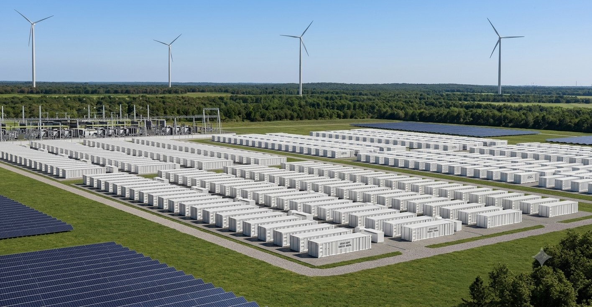
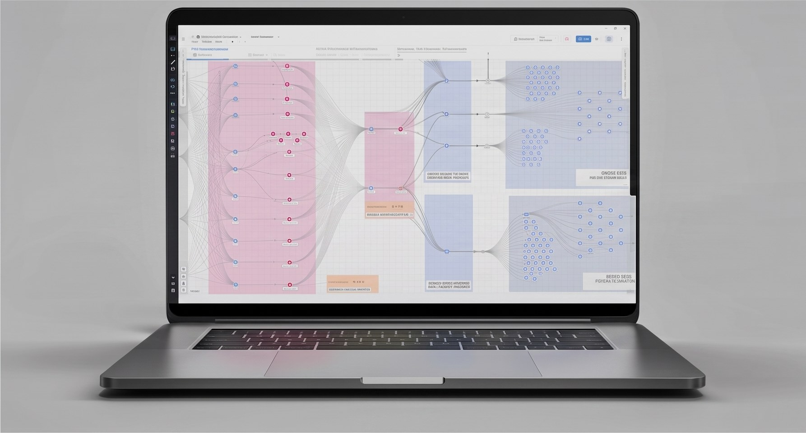
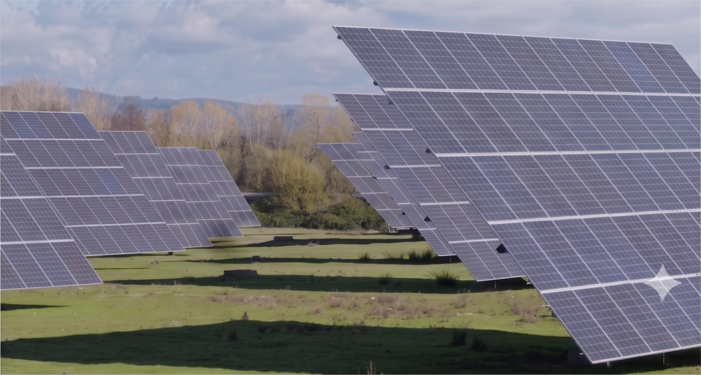

La transición energética está generando
más datos que nunca.
El próximo desafío es saber
qué hacer con ellos.
Inteligencia operacional para infraestructura energética crítica
El problema
Llega fragmentada — en sistemas que nunca fueron diseñados para hablarse entre sí, y en formatos que nunca fueron diseñados para compararse.
Los datos abundan.
La inteligencia escasea.
Más datos no producen automáticamente mejores decisiones. Quien opera o gestiona un activo no debería tener que dedicar horas a interpretar miles de señales para entender qué es lo que realmente importa.
La idea
De datos operacionales
a inteligencia operacional.
Quorelia no reemplaza los sistemas ya instalados en la planta. Se sitúa sobre ellos — se conecta a lo que producen y devuelve algo sobre lo cual una persona puede actuar.
El ecosistema
Inteligencia continua de desempeño sobre disponibilidad, comportamiento energético, estado de equipos y tendencias operacionales.
Información operacional procesada automáticamente en criterio de nivel gerencial — no un tablero más que revisar.
No solamente que algo ocurrió, sino por qué importa y qué merece atención.
Reportería diaria y mensual automática, estandarizada, transparente y trazable hasta la medición que la sustenta.
Señal operacional convertida en prioridades de mantenimiento — qué requiere atención, cuándo y por qué.
Cada informe responde las mismas cinco preguntas.
Qué ocurrió. Por qué ocurrió. Qué importa. Qué requiere atención. Qué debería ocurrir a continuación.
Transparencia gerencial
Una infraestructura.
Una sola verdad operacional.
Una capa inteligente.
Ejecutivos, gestores de activos, propietarios y equipos técnicos mirando la misma realidad operacional — a través de una capa que cada uno puede leer.

Contexto real
Capacidad instalada de almacenamiento
La tecnología de Quorelia se está aplicando en el contexto de infraestructura BESS del orden de 1 GW.
Construido y probado en torno a operaciones reales de almacenamiento de gran escala — no es un concepto teórico ni un entorno de demostración.
Construido sobre infraestructura real.
Diseñado para operaciones reales.
Los fundadores
Finanzas, estrategia de negocio y comercialización, con una mirada orientada a la tecnología sobre cómo se construye una empresa y cómo se lleva al mercado. MBA en Finanzas de la Universidad de Chile, con formación en marketing y desarrollo de negocios.
Infraestructura energética, renovables, tecnología y negocios internacionales, con experiencia directa en operación de plantas solares de gran escala y en construir sistemas que convierten información operacional compleja en inteligencia de gestión — entre datos, automatización e IA.
Diego y Jae Hee llevan cerca de diez años construyendo negocios juntos, en varias industrias, antes de converger en una misma observación: la infraestructura crítica produce cantidades enormes de datos, y quienes responden por ella siguen teniendo dificultades para convertirlos en algo simple, transparente y accionable.
De ese problema nació Quorelia.

La visión
La infraestructura se vuelve más compleja — solar, almacenamiento, activos híbridos, interacción con la red. La gestión no escala agregando más tableros y más personas. La próxima generación de infraestructura tendrá que observar, entender, comunicar y recomendar.
Estamos trabajando con actores de la infraestructura energética que quieren ver cómo se ven las operaciones inteligentes.
Construyamos juntos la próxima capa de la infraestructura energética.
jay@quorelia.org
quorelia.org